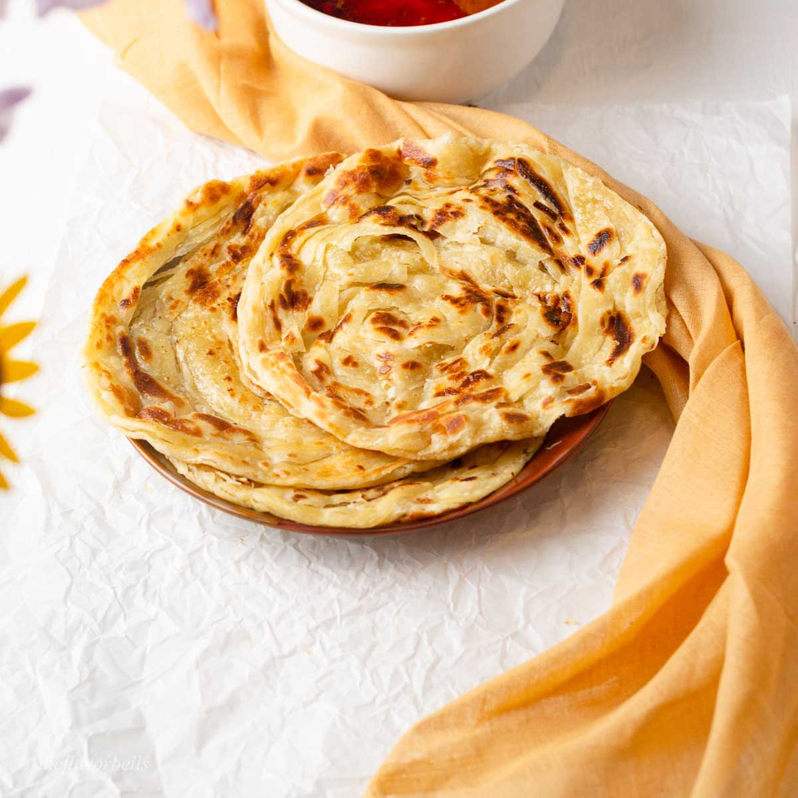
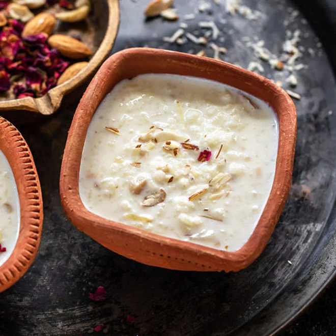
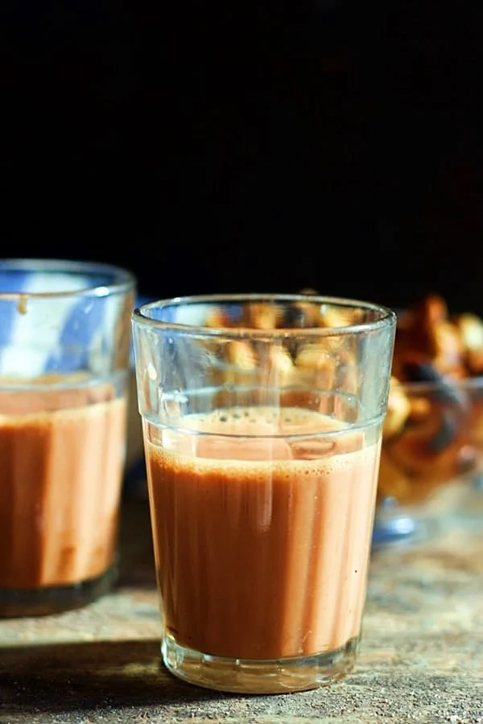
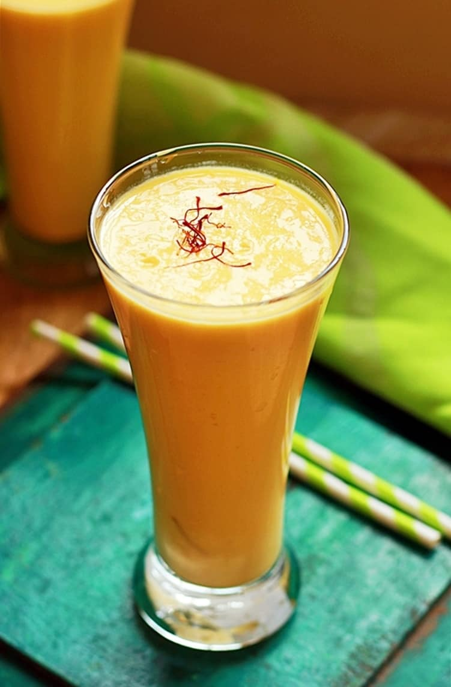
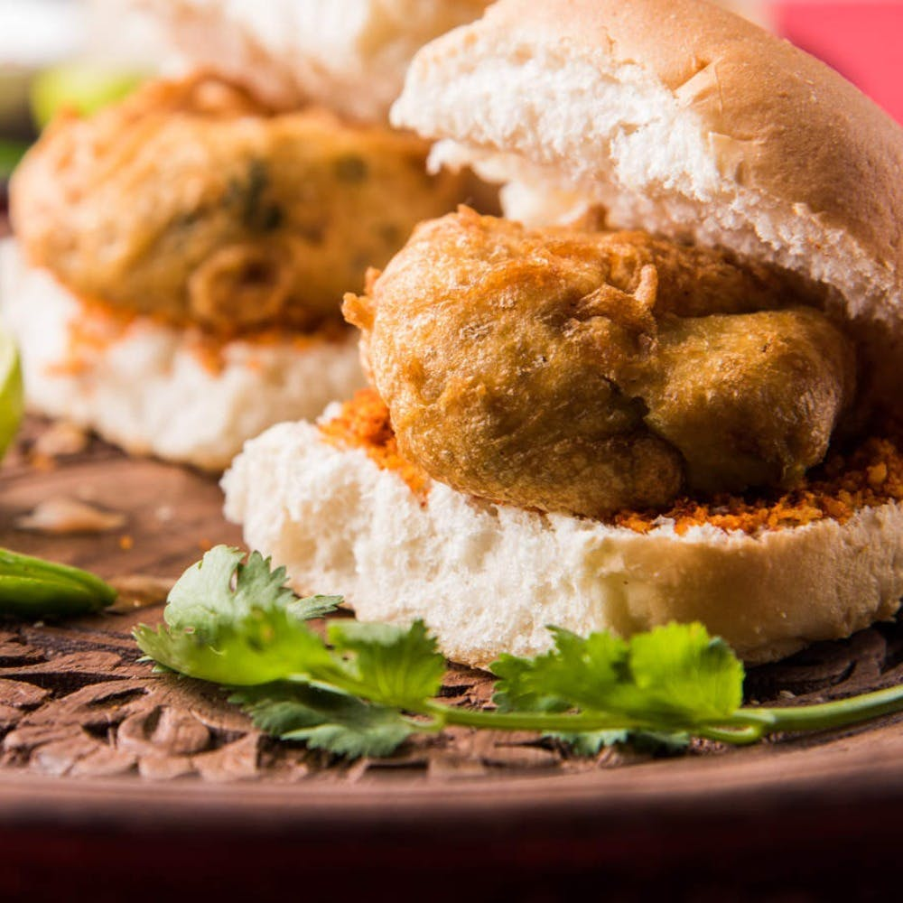
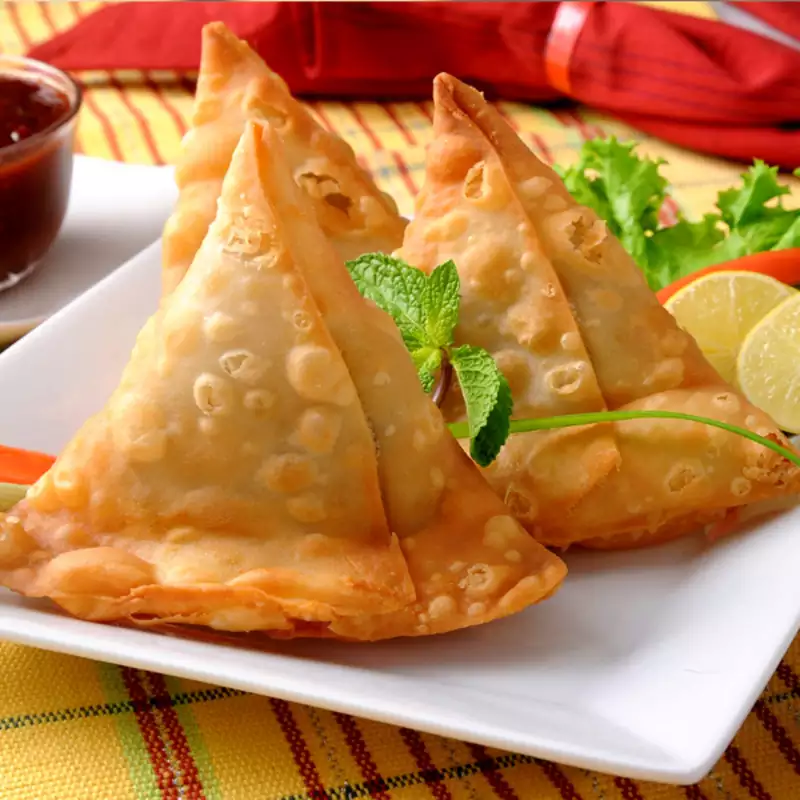
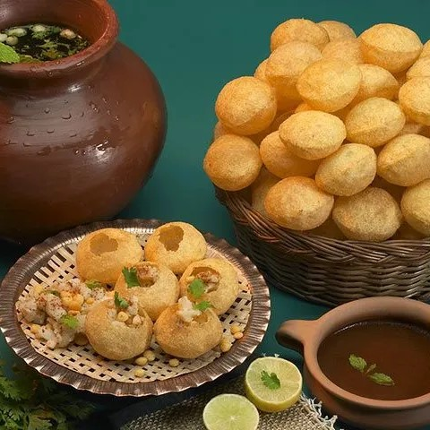
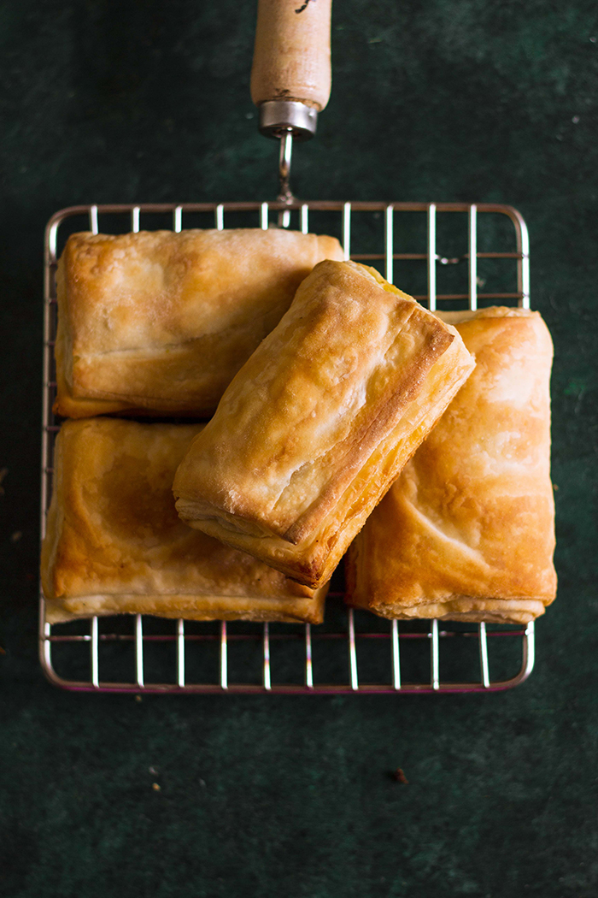

Latest Post
Hello, I am Priyanshu. I love to eat, travel, cook, and eat some more! I create & photograph vegetarian recipes from my restaurants in gujarat, India, while our customer enjoy their meal at our restros.

Paratha (Indian Pancake)
Breakfast, lunch, tea time, and dinner - this popular Indian pancake is available for a meal or snack. As kids we ate it sprinkled with sugar. It's typically served with curry and sambal if you choose to spice it up
Read More

Kheer (Rice Pudding)
This is a very flavorful Indian rice pudding. It's the best rice pudding I've ever had, and very easy to make!
Read More

Chai Tea Latte
This milky chai tea latte is really similar to the brand Oregon Chai. Simply delicious either hot or iced! This will save you more money than buying the chai. In India, each family has their own way of making it, so you should experiment to find your favorite blend.
Read More

Indian Lassi
Here is a basic recipe for Indian Lassi (yogurt drink). You can add more or less yogurt or water for a thicker or thinner beverage. For a salty lassi, you can substitute 1/2 teaspoon salt for the sugar. Garnish with fresh mint if desired.
Read More
Dosa
A dosa is a thin batter-based pancake originating from South India, made from a fermented batter predominantly consisting of lentils and rice. Its main ingredients are rice and black gram, ground together in a fine, smooth batter with a dash of salt, then fermented
Read More

Vadapav
The most famous snack in Mumbai, vada pav is claimed to be a part of the culture of Mumbaikars (slang for people leaving in mumbai) .It is also called Bombay burger in keeping with its origins and its resemblance in physical form to a burger.
Read More

Samosa
It is one of the popular Indian spicy snacks. Samosa is a triangular-shaped fried or baked food; its dough is prepared from white flour, ajwain – mangrail along with salt, and some red chilli powder to give flavour. It is usually filled with spicy potatoes and onion mixture and served with sauces.
Read More

Pani Puri
Pani Puri is the heart and soul of the Indian chat. Most famous chat of India to which no one can deny to eat. It tastes great when spicy potatoes filled in hollow crispy puri, spicy tangy water, and sweet sauce (chutney) are mixed together.
Read More
